Getting Started
Super Admin
Super Admin installs the application and provides his email credentials while installing. He/she is responsible for setting up and configuring the application to make it ready for use. The Super Admin will be the first employee in the application, for example: EMP0001 or SENT0001. However in Sentrifugo, the Super Admin will not be included in the organization’s employees’ list. The employees’ list starts from the second employee (Organization Head).
The Super Admin has unlimited access over the entire application. In other words, he/she has full control, and is responsible for administering Sentrifugo.
Default Role Groups in Sentrifugo
There are 6 main role groups available by default in Sentrifugo:
- Management
- Manager
- HR
- Employee
- System Admin
- External User
Within each role group a maximum of 5 role groups can be created. For example:
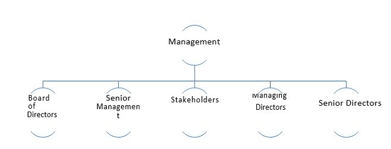
Super Admin
After installing Sentrifugo your (Super Admin) credentials will be sent to your email address and will also be available in a downloadable PDF file. To access the application follow the link provided on the screen after installation.
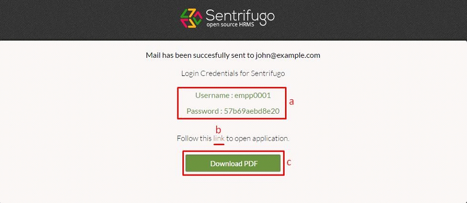
- Super Admin login credentials
- Follow this link to open the application
- Download PDF file containing login credentials
Super Admin receives the below email:
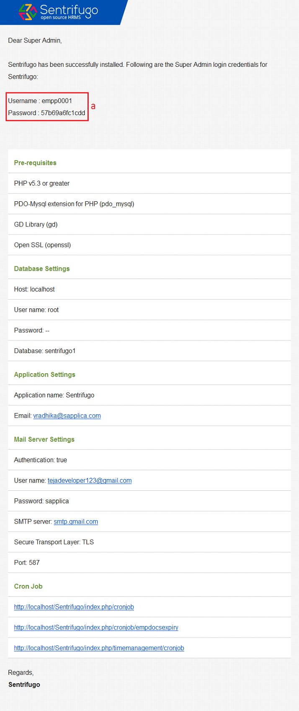
Employees/Users
After the HR/Management/Super Admin adds you to Sentrifugo, your credentials will be sent to your provided email address. You can access the application through the link provided in the email containing your credentials
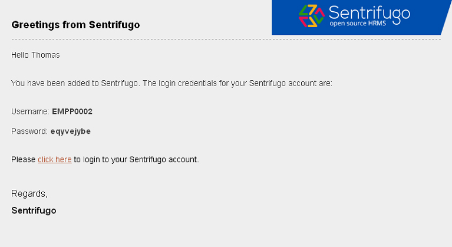
The link leads you to the Sentrifugo login screen.
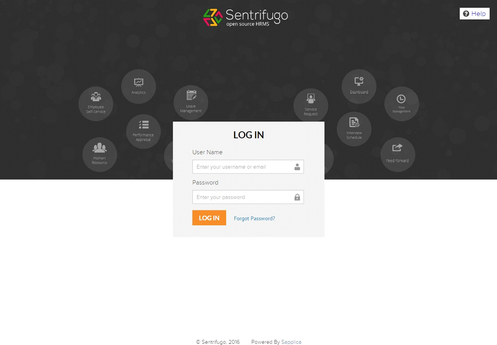
The Super Admin can begin setting up Sentrifugo by using the Configuration Wizard.
Configuration Wizard
Configuration Wizard allows you to configure settings that reflect requirements unique to your organization and make your application ready to use. Configuration Wizard is the first screen that is displayed if you are logging into the application for the first time.
Information is gathered in 5 steps.
Step 1: Modules
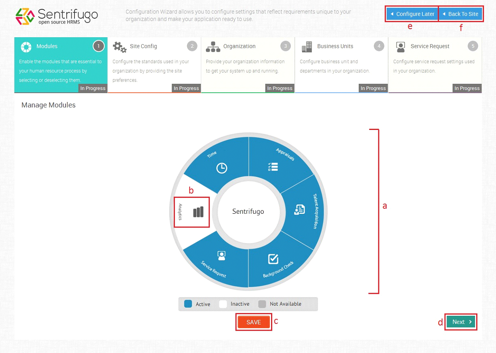
- All the modules are displayed in a circular representation
- Click on a module icon to activate or inactivate a module
- Click SAVE button to apply the changes made
- Click Next button to proceed to the next step
- Click Configure Later and you will be redirected to the dashboard and you can complete the Configuration as per your convenience
- Click Back To Site button and you will be redirected to the dashboard. The next time you log in, it will resume from where you had discontinued earlier in the configuration wizard.
Step 2: Site Config
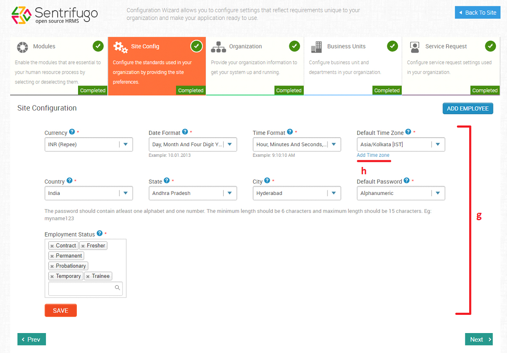
- Make changes to the Site Configurations based on your organization preferences
- Click Add Time Zone to add the required time zone
When you click Add time Zone another window will pop up which will let you select the time zone(s) you require in your organization.
Step 3 :Organization
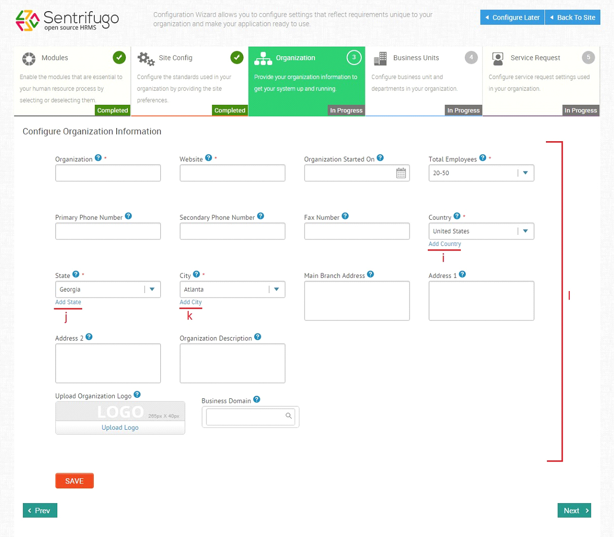
- Click Add Country to add the required country
- Click Add State to add the required state
- Click Add City to add the required city
- Enter information about your organization
After saving your organization’s details, an ADD Employee button will appear on the top right corner of the configuration wizard screen. However, it is not mandatory to add an employee in this step, you can even add an employee after the entire configuration is completed.
If you want to add an employee please refer to section 1.4 How do I add employees to Sentrifugo?
Step 4 :Business Units
You can create business units and departments here.
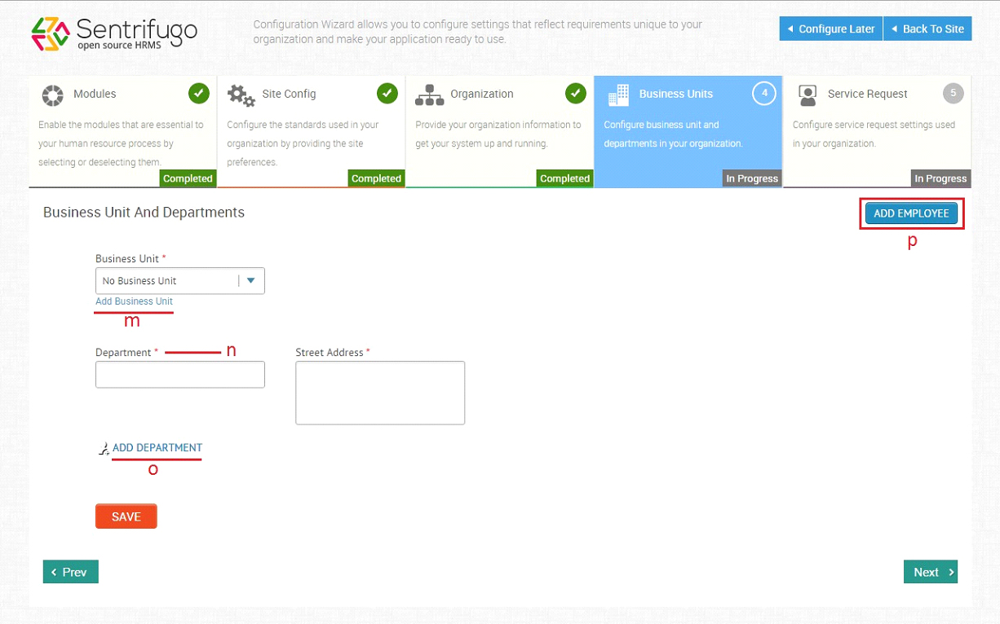
- Create a new business unit by giving its name and street address.
- Create a new department within the business unit
- Add another department (To have multiple departments under a business unit)
- Click here to add the first employee (organization head)
Step 5 :Service Request
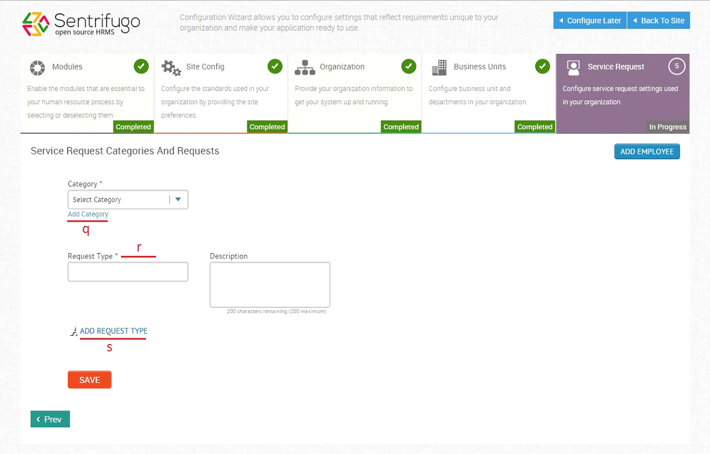
- Create a new service category
- Create a new request type
- Add another request type
Click Back To site to go back to the application’s dashboard and exit the configuration wizard.

Ensure that yoy always SAVE after entering details in each section of the Configuration Wizard and only then Proceed
Add Employees to Sentrifugo
Gathering management details is an important aspect of an organization. The first employee you add will be the Organization Head.
You can add other employees only after adding the Organization Head.
While adding employees ensure that they align with the hierarchy of your organization (top down approach). Reporting manager is a mandatory field, while adding employees.
Adding Organization Head (Employee #2)
On clicking ADD EMPLOYEE in the configuration wizard screen the below screen will appear:
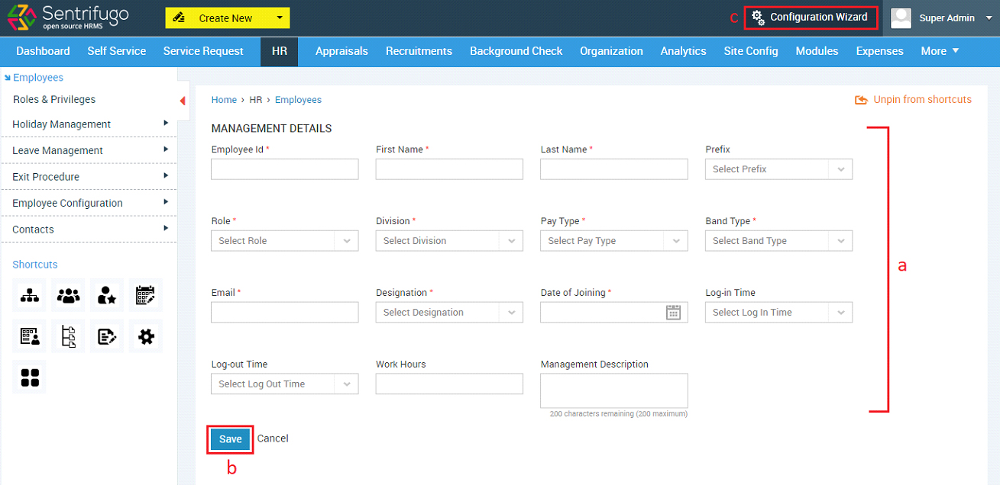
(a) Enter the all the mandatory details
(b) Click on Save button
(c) Go back to the configuration wizard and resume configuring your application
Adding Other Employees
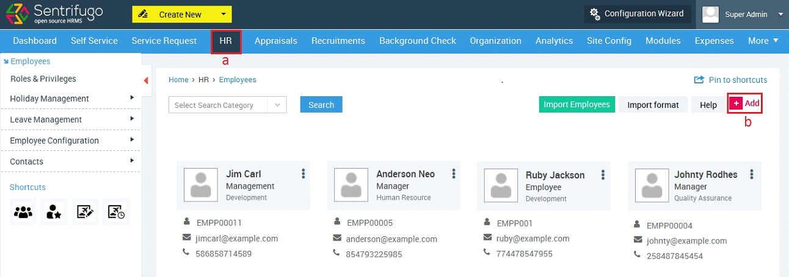
(a) Click HR in the top menu
(b) Click +Add button on the right side
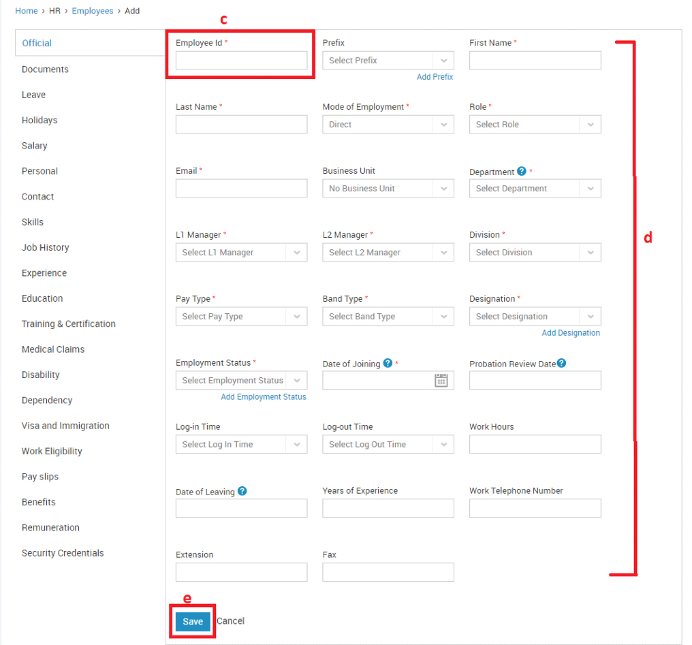
(c) You will need to enter the Employee ID manually.
(d) Enter the required details related to the employee
(e) Click Save button to add the employee
Only the Super Admin’s ID number will be fixed as 0001. All the other Employees including the Organization Head can have customized employee ID numbers. For example:
Super Admin: EMP0001
Organization Head:
EMP0022 Manager:
Adding Employees in Bulk
Employees can be added in bulk using the import option. You have to download the import format excel doc, fill it in with all the employees' details and then import it.
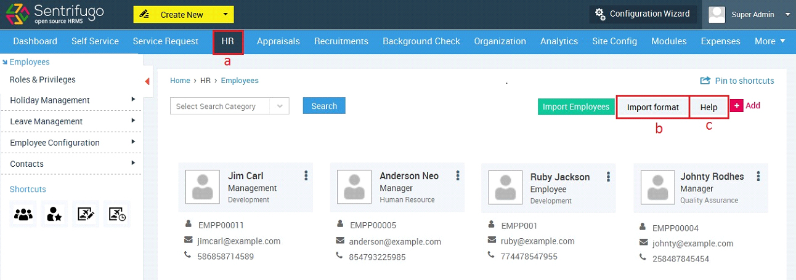
(a) Click HR in the top menu
(b) Click Import Format on the right side above the Employees grid to download the format
(c) For further guidance, click on the Help link. You will be directed to the import guide, which will provide you detailed information on how to add employee in bulk
Please refer to the below figure to view the Import Format
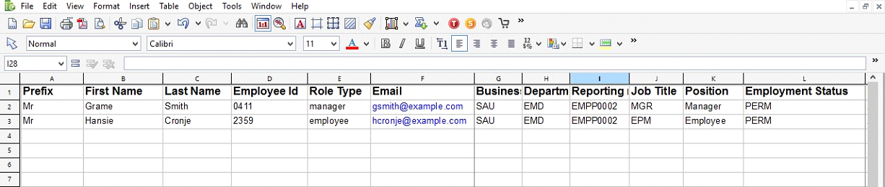
In bulk import, emails containing the credentials will not be sent automatically to the employees. The employee data will only be saved in the database. In order to send emails, you will need to run the cron job:
http://..(your domain name)../..(your application name)../index.php/cronjob
For Example: http://example.com/sentrifugo/index.php/cronjob
Please logout of the application and then run the cron job in your browser.
Edit Employee details
Employee details can be edited to make necessary changes by selecting the edit option available.
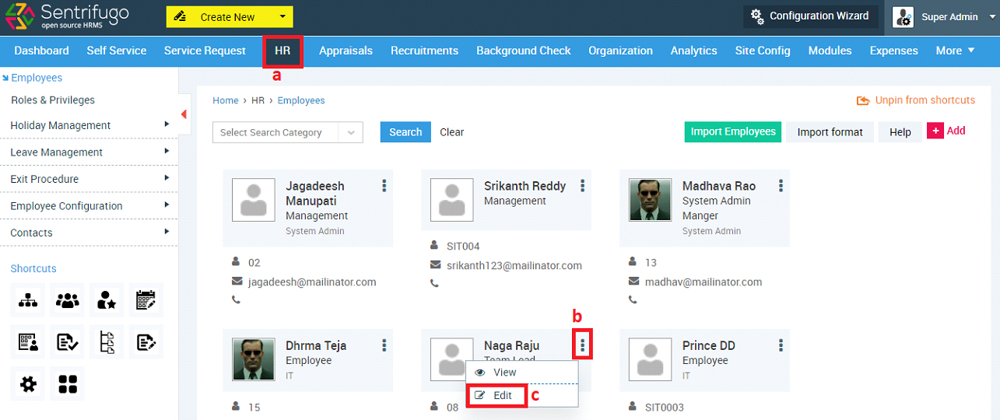
(a) Click on the HR module in the top menu. A list of employees will be displayed by default.
(b) Click on the dots shown for every individual employee.
(c) Select Edit option to make changes to the employee details.
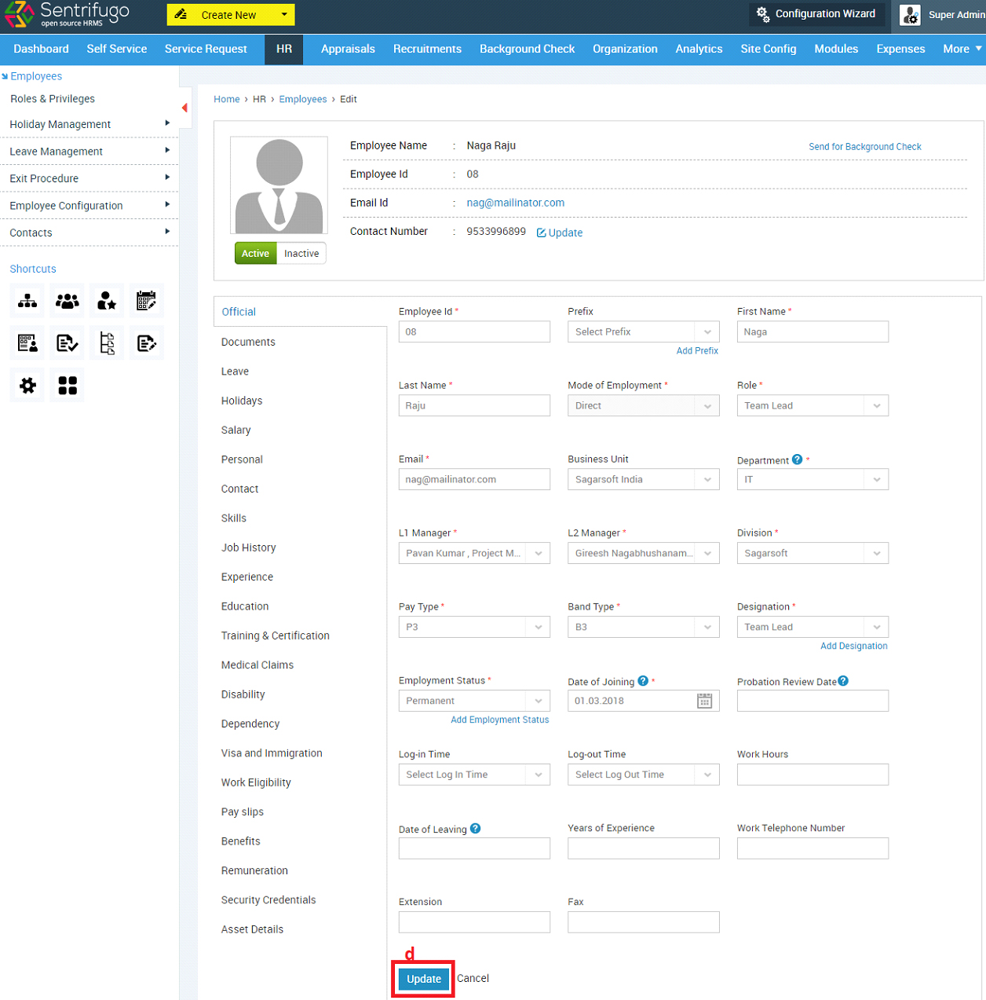
(d) Make required changes to the employee details and click “Update” to save your changes.
How do Inactivate an employee
Navigate to the list of employees from the HR module and select EDIT option as described in the previous section. (Refer to 1.4.4)
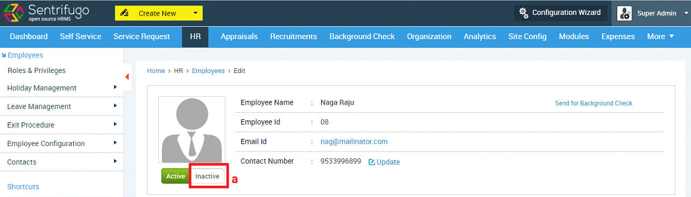
(a) Click on Inactivate button available below the employee picture.
It will display a pop up window as shown below.
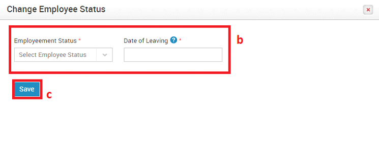
(b) Enter the required details.
(c) Click SAVE to confirm your actions.
Add Business Units and Departments (without using configuration wizard)?
Business Units and Departments are the two main organizational units of Sentrifugo. A Business Unit can have multiple departments and not vice versa. Below is an example of the Organization Structure in Sentrifugo.
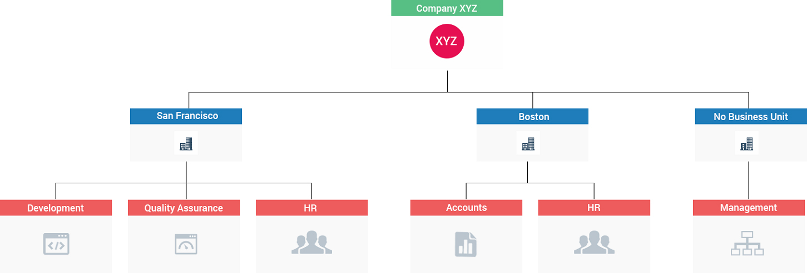
Adding Business Units
(a) Click Organization in the top menu
(b) Click on Business Units on the left panel
(c) Click on +Add button on the right side.
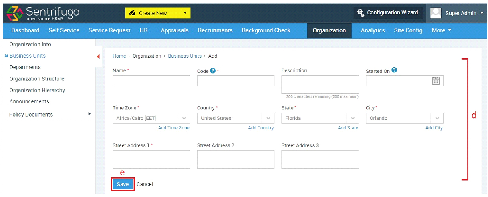
(d) Enter the necessary details
(e) Click on Save button to save the Business Unit
Adding Departments
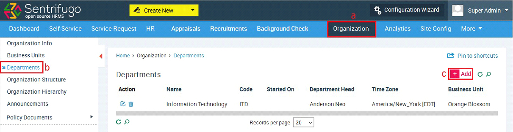
(a)Click Organization in the top menu
(b)Click on Departments on the left menu panel
(c) Click on +Add button on the right side
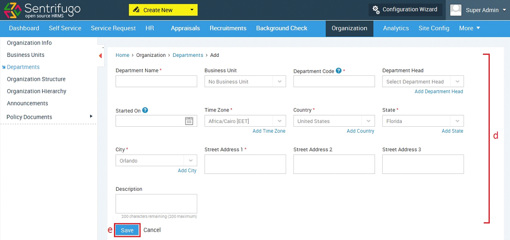
(d)Enter the necessary details
(e)Click Save button to create a new department
No Business Unit
If you need only Departments and no Business Units, then you can go for the option ‘No Business Unit’. While creating a Department (refer 1.5.2 Adding Departments) select the option ‘No Business Unit’ in the Business Unit field.
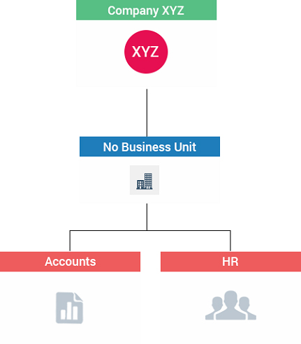
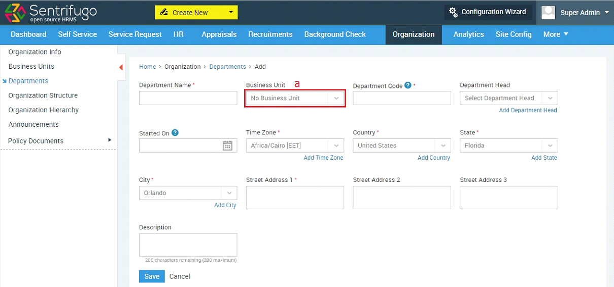
(a) Select the option ‘No Business Unit
Add Job Titles and Positions
Job title is an employee’s designation and Position is the designation level. For example if the Job title is Software Engineer, then the Position can be Senior Software Engineer or Associate Software Engineer.
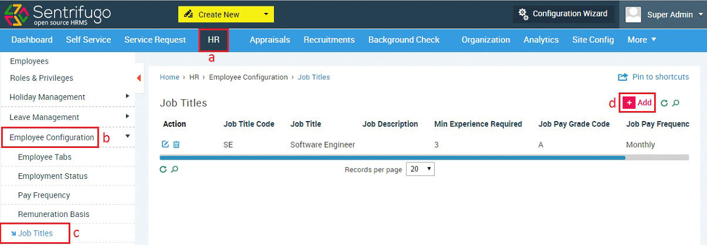
Adding Job Titles
(a) Click HR in the top menu
(b) Click Employee Configuration, it will expand to give more menu items
(c) Click Positions in the submenu
(d) Click +Add button on the right side
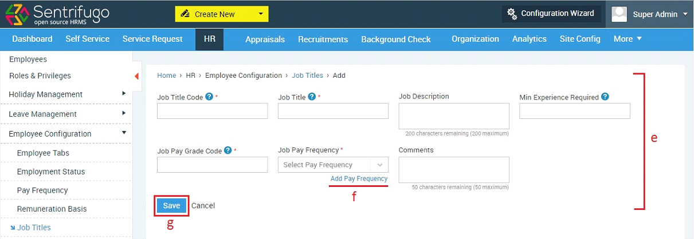
(e) Fill in the required details
(f) Click Add Pay Frequency to add different frequency categories like Monthly, Daily etc.
(g) Click Save button to create a new job title
Adding Positions
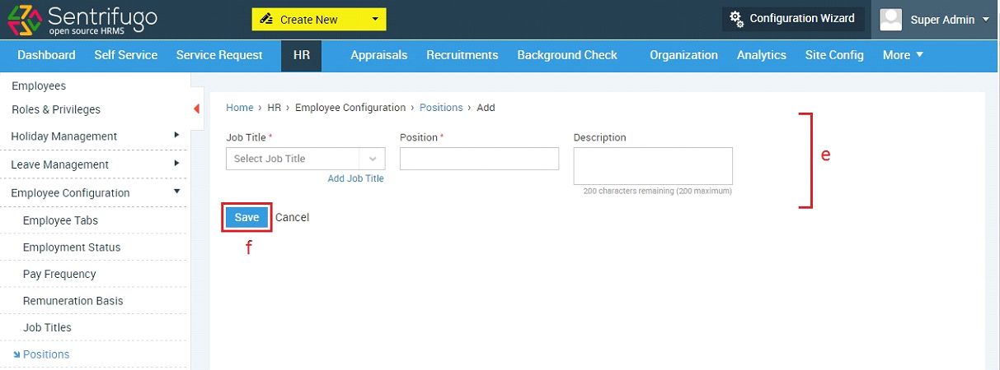
(a) Click HR in the top menu
(b) Click Employee Configuration, it will expand to give more menu items
(c) Click Positions in the submenu
(d) Click +Add button on the right side
(e) Fill in the required details
(f) Click SAVE to successfully create a position.
You can create a Position only after creating a Job Title